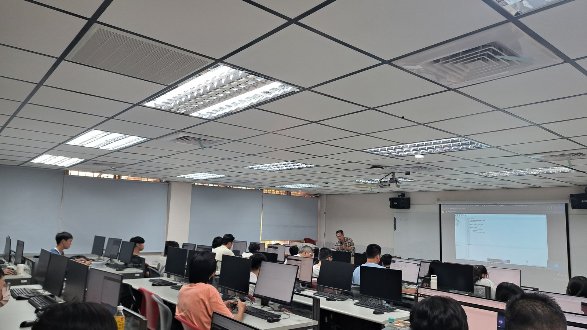
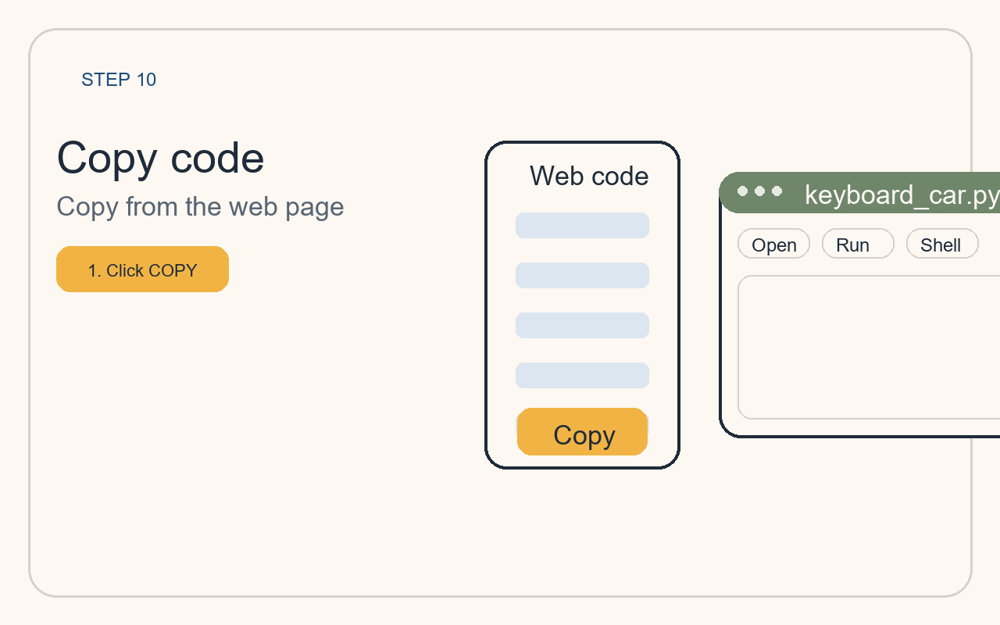
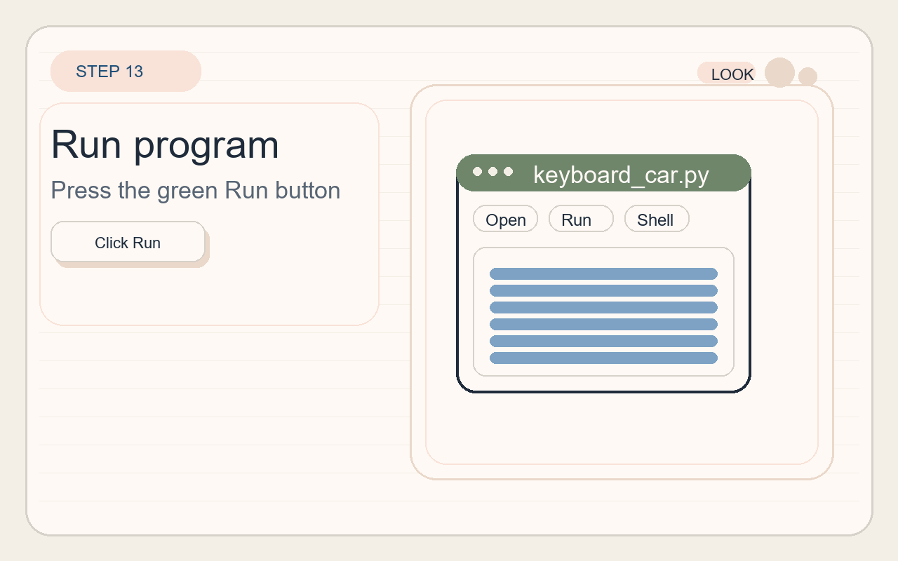

先知道這台車的限制
- 目前這台車以兩個數位循跡感測器為主，所以演算法版本都採用簡化教學版。
- 規則式最容易上手，P 是第一個連續控制版本。
- PD 常常已經能讓循跡更穩定。
- PID 在這裡主要用來教控制思路與調參，不一定永遠比 PD 更好。
Topic 5
這個主題不只介紹一種控制法，而是把規則式、P、PD、PID 四種常見循跡做法排在一起比較。 使用者可以先看每種演算法適合什麼情境，再直接打開程式頁，把演算法貼到 Thonny 執行。

這一頁的目標不是只背公式，而是看懂不同演算法會如何影響小車修正黑線的方式。
Topic Route
先從最直觀的規則式開始，再一路走到 P、PD、PID，理解控制想法如何逐步變細。
先用「看到黑線就左修正、右修正、前進或停止」這種固定規則，建立最基本的循跡直覺。

先把感測器讀值換成 error，再用比例控制把 error 直接轉成左右輪速度差。

在 P 的基礎上再看 error 變化有多快，讓修正更平滑，也更不容易左右來回擺動。

再加入積分項，處理長時間偏差。這在教學上很重要，但也最需要耐心調參。

Comparison
你不一定要一次教完四種。最實用的方式通常是：規則式 -> P -> PD，最後再把 PID 當進階概念。
最好懂、最好上手。很適合第一次做循跡，但轉向常會比較突然。
第一次引入 error 與 correction 的概念，讓小車不只是硬轉，而是開始用速度差修正。
很多小型循跡車會從這裡得到最好教、最好調、也最容易看到平滑效果的版本。
最完整，也最適合補充正式控制概念；但在兩顆數位感測器的簡化場景裡，不一定每次都比 PD 更划算。
Algorithm Codes
打開程式頁之後，就能直接複製完整程式到 Thonny。這一區的重點是讓使用者可以快速比較不同演算法的差別。
How To Use
這一題不需要重新學新的操作流程，只要沿用 Boot Camp 的方式，把不同程式貼到 Thonny 執行即可。
先決定今天要貼規則式、P、PD 或 PID 版本。

進入程式頁後，直接按複製按鈕，把整份程式帶到剪貼簿。

把程式貼到新的 `.py` 檔，存檔後按下 Run 讓 Pico 小車開始執行。

注意轉向平順度、回到黑線的速度，以及是否容易左右擺動。
Professional Supplement
這一區把演算法比較和正式控制資料接起來，讓教學網站不只有程式，也有更完整的概念背景。
NI 的教學資料很適合補充 PID 的基礎觀念，特別是誤差如何透過控制器回頭調整輸出。
查看 NI 參考資料這份資料很適合拿來說明比例、積分、微分三個項目各自是在處理什麼問題。
查看 MathWorks 說明Pololu 的官方循跡教材提到，進階循跡會用連續函數控制速度，而 PD 常是實務上很好調整的起點。
查看 Pololu 說明